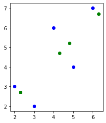
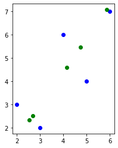
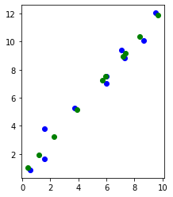

PCA - Part 1#
Mahmood Amintoosi, Fall 2024
Computer Science Dept, Ferdowsi University of Mashhad
Chapter 7 of Zaki
import numpy as np
import matplotlib.pyplot as plt
import seaborn as sb
import pandas as pd
u0 = np.array([[1], [1]])
u0 = u0 / np.linalg.norm(u0)
# u0, np.linalg.norm(u0)
u1 = u0.copy()
u1[0] *= -1
u0, u1
(array([[0.70710678],
[0.70710678]]),
array([[-0.70710678],
[ 0.70710678]]))
origin = np.array([0, 0])
plt.quiver(
origin[0],
origin[1],
u0[0],
u0[1],
scale=1,
scale_units="xy",
angles="xy",
color="r",
)
plt.quiver(
origin[0],
origin[1],
u1[0],
u1[1],
scale=1,
scale_units="xy",
angles="xy",
color="r",
)
x = np.array([0.5, 1])
x = np.reshape(x, (2, 1))
plt.scatter(x[0], x[1])
plt.axis("equal")
plt.axis([-1, 1, 0, 1])
plt.text(x[0], x[1]+0.04, "x")
Text([0.5], [1.04], 'x')
U = np.concatenate((u0, u1), axis=1)
U, x
(array([[ 0.70710678, -0.70710678],
[ 0.70710678, 0.70710678]]),
array([[0.5],
[1. ]]))
# eq 7.3, page 185 Zaki
a = U.T @ x
x, a, U @ a
(array([[0.5],
[1. ]]),
array([[1.06066017],
[0.35355339]]),
array([[0.5],
[1. ]]))
origin = np.array([0, 0])
plt.quiver(
origin[0],
origin[1],
u0[0],
u0[1],
scale=1,
scale_units="xy",
angles="xy",
color="r",
)
plt.quiver(
origin[0],
origin[1],
u1[0],
u1[1],
scale=1,
scale_units="xy",
angles="xy",
color="r",
)
a0u0 = a[0] * u0
a1u1 = a[1] * u1
plt.quiver(
origin[0],
origin[1],
a0u0[0],
a0u0[1],
scale=1,
scale_units="xy",
angles="xy",
color="b",
)
plt.quiver(
origin[0],
origin[1],
a1u1[0],
a1u1[1],
scale=1,
scale_units="xy",
angles="xy",
color="b",
)
plt.scatter(x[0], x[1])
plt.axis("equal")
plt.axis([-1, 1, 0, 1])
(-1.0, 1.0, 0.0, 1.0)
U, x, a
(array([[ 0.70710678, -0.70710678],
[ 0.70710678, 0.70710678]]),
array([[0.5],
[1. ]]),
array([[1.06066017],
[0.35355339]]))
u0 * a[0] + u1 * a[1], U @ a
(array([[0.5],
[1. ]]),
array([[0.5],
[1. ]]))
# Eq 7.5
r = 1
Ur = U[:,0:r]
ar = a[:r]
x_prime = Ur@ar
x_prime
array([[0.75],
[0.75]])
a[0]*u0, U[:,0:1]@a[:1], u0 @ a[:1], u0 @ a[0]
(array([[0.75],
[0.75]]),
array([[0.75],
[0.75]]),
array([[0.75],
[0.75]]),
array([0.75, 0.75]))
# x_prime is the projection of x onto the first r basis vectors
x_projected = Ur@ar
x_projected
array([[0.75],
[0.75]])
origin = np.array([0, 0])
plt.quiver(
origin[0],
origin[1],
u0[0],
u0[1],
scale=1,
scale_units="xy",
angles="xy",
color="r",
)
plt.quiver(
origin[0],
origin[1],
u1[0],
u1[1],
scale=1,
scale_units="xy",
angles="xy",
color="r",
)
a0u0 = a[0] * u0
a1u1 = a[1] * u1
plt.quiver(
origin[0],
origin[1],
a0u0[0],
a0u0[1],
scale=1,
scale_units="xy",
angles="xy",
color="b",
)
plt.quiver(
origin[0],
origin[1],
a1u1[0],
a1u1[1],
scale=1,
scale_units="xy",
angles="xy",
color="b",
)
plt.scatter(x[0], x[1])
plt.scatter(x_projected[0], x_projected[1])
plt.axis("equal")
plt.axis([-1, 1, 0, 1])
(-1.0, 1.0, 0.0, 1.0)
Page 189 of Zaki
We also assume that the data matrix D has been centered by subtracting the mean \(\mu\)
\(X \equiv D\)
\( mean\_X \equiv \mu\)
\( Z \equiv X\_centered \equiv \bar{D}\)
Algorithm 7.1, page 199 of Zaki book, Slide 16 of Chap 7
X = np.array([[2, 3], [3, 2], [4, 6], [5, 4], [6, 7]])
# Step 1
mean_X = np.mean(X, axis=0)
# Step 2
Z = X - mean_X
print(Z.shape)
# Step 3
Sigma = 1 / X.shape[0] * Z.T @ Z
Sigma
(5, 2)
array([[2. , 2. ],
[2. , 3.44]])
\( \Sigma \approx Cov\)
# covariance, function needs samples as columns
# cov_mat = np.cov(Z.T)
# cov_mat
# Sigma = np.zeros((2,2))
# for i in range(X.shape[0]):
# xi = Z[i]
# Sigma += xi.reshape(2,1)*xi
# Sigma /= (X.shape[0])
# Sigma
# Step 4, 5
lambdas, U = np.linalg.eigh(Sigma)
lambdas, U
(array([0.59434716, 4.84565284]),
array([[-0.81814408, 0.57501327],
[ 0.57501327, 0.81814408]]))
# eigen_values, eigen_vectors = np.linalg.eigh(Sigma)
# eigen_values, eigen_vectors
lambda0 = lambdas[0]
u0 = U[:, 0:1]
print(u0)
print(Sigma @ u0)
print(lambda0 * u0)
[[-0.81814408]
[ 0.57501327]]
[[-0.48626161]
[ 0.34175751]]
[[-0.48626161]
[ 0.34175751]]
U @ np.diag(lambdas) @ np.linalg.inv(U)
array([[2. , 2. ],
[2. , 3.44]])
# Steps 4, continue ... (Sorting)
sorted_index = np.argsort(lambdas)[::-1]
lambdas = lambdas[sorted_index]
U = U[:, sorted_index]
lambdas, U
(array([4.84565284, 0.59434716]),
array([[ 0.57501327, -0.81814408],
[ 0.81814408, 0.57501327]]))
Steps 6 & 7 is omitted
num_components = 1
# Step 8
Ur = U[:, 0:num_components]
Ur
array([[0.57501327],
[0.81814408]])
Step 9: X_projected = A
There is mistake in the Algorithm in slides, x should be replaced with \(\bar{x}\)
X_projected = Z @ Ur
X_projected
array([[-2.40416306],
[-2.40416306],
[ 1.13137085],
[ 0.42426407],
[ 3.25269119]])
X_reconstructed = X_projected @ Ur.T + mean_X
X_reconstructed
array([[2.3, 2.7],
[2.3, 2.7],
[4.8, 5.2],
[4.3, 4.7],
[6.3, 6.7]])
fig = plt.figure()
plt.scatter(X[:, 0], X[:, 1], c="blue")
plt.scatter(X_reconstructed[:, 0], X_reconstructed[:, 1], c="green")
ax = plt.gca()
ax.set_aspect("equal", adjustable="box")
plt.draw()

def PCA(X, num_components):
# num_components = r
# Step-1
mean_X = np.mean(X, axis=0)
Z = X - mean_X
# Step-2
# covariance, function needs samples as columns
cov_mat = np.cov(Z.T)
# Step-3
lambdas, U = np.linalg.eigh(cov_mat)
# Step-4
sorted_index = np.argsort(lambdas)[::-1]
# sorted_eigenvalues = eigen_values[sorted_index]
U = U[:, sorted_index]
# Step-8
Ur = U[:, 0:num_components]
# Step-9, A
X_projected = Z @ Ur
X_reconstructed = X_projected @ Ur.T + mean_X
return X_projected, X_reconstructed
# Applying it to PCA function
X_projected, X_reconstructed = PCA(X, 1)
fig = plt.figure()
plt.scatter(X[:, 0], X[:, 1], c="blue")
plt.scatter(X_reconstructed[:, 0], X_reconstructed[:, 1], c="green")
ax = plt.gca()
ax.set_aspect("equal", adjustable="box")
plt.draw()

w0, w1 = 2, 1
N = 10
# Data Generation
np.random.seed(42)
x = np.random.rand(N, 1)*10
epsilon = np.random.randn(N, 1)
y = w0 + w1 * x + epsilon
X = np.hstack([x, y])
X.shape
(10, 2)
X_projected, X_reconstructed = PCA(X, 1)
fig = plt.figure()
plt.scatter(X[:, 0], X[:, 1], c="blue")
plt.scatter(X_reconstructed[:, 0], X_reconstructed[:, 1], c="green")
ax = plt.gca()
ax.set_aspect("equal", adjustable="box")
plt.draw()
